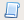
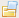

New/Open Script
The following are ways to start a new script:
- When you open TeleKast, it defaults to a new script
- From the File menu, choose New Script
- From the context menu (usually the right mouse button), choose New Script
- Click the toolbar button 
- The shortcut key Control+N
The following are ways to open an existing script:
- From the file menu, choose Open Script
- Click the toolbar button 
- The shortcut key Control+O